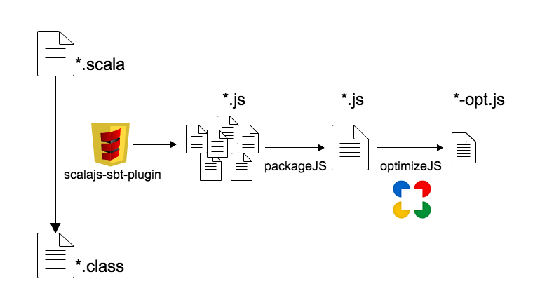

Scala.js
@tototoshi
2014/03/19 Sendagaya.js (仮)
自己紹介
Twitter:
@tototoshi
Github:
github.com/tototoshi
pixiv で画像周りやってます。
自己紹介
好きな言語: Scala
作ってる
tototoshi/slick-joda-mapper
tototoshi/play-flyway
あとは Play とかいろいろ
というわけで、フロントもScalaで書きたい!
Scala.js
"Scala to JavaScript" Compiler
つまりは altJS
2014/03/19 現在のバージョンは 0.4.0
Scala.js
Scala の全ての言語機能が使える
Pattern matching
Extractor
For-comprehension
Option(Maybe) Monad
String interpolation
etc...
Static types for JavaScript
Scala.js
JavaScript のグローバル関数は
scala.scalajs.js.Dynamic.global
を通して呼び出せる。
Scala.js
Static types for JavaScript
JavaScript を静的型付け言語として扱うことも可能
TypeScript に似ている
テスト
jasmine
をサポート
JavaScript に変換した上でテストが走る
仕組み

歴史
2013/06 @ScalaDays
16MB のHello, World.
2013/08
900KB
コンパイル30秒
歴史
2013/10
700KB
Scalaz が動く
2013/11
400KB
2013/12
Test suite がつく
歴史
2014/02
300KB
コンパイル1秒
optimize 5分
2014/02 (scala.js 0.4.0)
150KB
optimize 30秒
@JSExport
Scala.js 0.4.0新機能の紹介 - PABlog
使えるの？
始めはみんなネタだと思っていた。
ところが1年足らずでかなりの進化を遂げてしまった。
サンプルコード
このスライド
tototoshi/scala-js-slide
簡単でしょ?
出力された JavaScript
読めないけど、見てみよう。
slide.js
slide-opt.js (最適化後)
やってみる？
$ git clone https://github.com/sjrd/scala-js-example-app.git
Library & tools
Scala.jsFiddle
scala-js-dom - Static types for DOM API
scala-js-jquery - Static type for jQuery
お役立ち
scala-js.org
Live Coding ScalaJS, SF Scala 28 Feb 2014 on Vimeo
JavaScript interoperability
Scala.jsとJVMの両対応コードとScala.jsのテストの書き方
Scala については
【書籍】Scala スケーラブルプログラミング
【PDF】Scala By Example
今後
もっと小さく、コンパイルが速く?
Play に入るかも? -
Add buildin ScalaJs support · Issue #2321
DefinitelyTyped for scala.js 欲しい
宣伝
2014/09/06-07 ScalaMatsuri
Guest: Martin Odersky 先生
#rpscala
隔週水曜 20:00~22:00